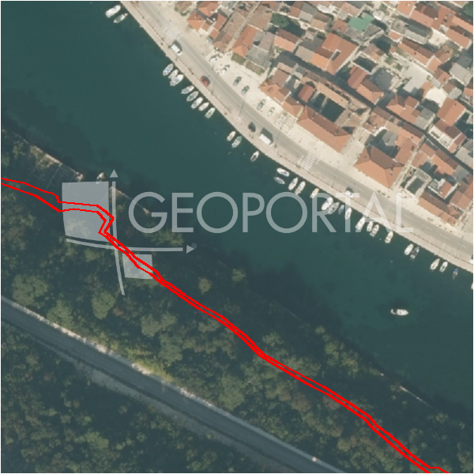

#40995 · PRILIKA – Građevinsko Zemljište Novigrad – Pridraga 2500 m2
Novigrad, Novigrad, Zadarska · zemljiste · njuskalo · status active · oglas ↗
Ocjena
- Score
- 59 rule 59 · LLM – · 12.09.2026.
- RLV
- 1,69 M€ (828 €/m²) · ratio 13,54
- Ukupna investicija
- 4,16 M€
- GBP
- 1.635 m²
- Feedback
- –
- CRM
- –
Sažetak: Prodaje se građevinska parcela od 2.500 m² u zaseoku Viduke kod Pridrage (općina Novigrad), manje od 1.200 m od mora, s pristupnim putem uz dvije strane parcele i komunalnom infrastrukturom uz parcelu bez pojedinačno navedenih priključaka. Moguća je parcelacija na manje dijelove, a vlasništvo je navedeno kao uredno.
Oglas
- Cijena
- 125.000 € (50 €/m²)
- Površina
- 2.500 m² · DKP 2.044 m² (odstupanje -18,2 %)
- Prodavatelj
- agencija · Nelmar Nekretnine
- Prvi put
- 11.09.2026. · zadnje 11.09.2026. · 0 d na tržištu
Povijest cijene
| Datum | Cijena |
|---|---|
| 11.09.2026. | 125.000 € |
Flagovi
natura_uz_gradnju Natura/zaštićeno područje uz građevinsku zonu — posebni uvjeti (−5)zop_70_100 ZOP pojas 70/100 m (−10)
zone_uncertainty zona nije pregledana (reviewed: false) (−5)
llm_pending LLM ekstrakcija/ocjena nedostupna
Komponente score-a
| rlv | {'gbp': 1635.3120000000001, 'kis': 0.8, 'nkp': 1226.4840000000002, 'noi': None, 'rlv': 1692014.666086957, 'ratio': 13.536117328695656, 'value': None, 'phases': 1, 'profile': 'obala_visestambeno', 'gdv_neto': 6868310.400000001, 'cost_soft': 163531.20000000004, 'gdv_bruto': 8585388.000000002, 'kis_known': False, 'total_inv': 4155367.5200000005, 'cost_build': 3270624.0000000005, 'cost_other': 588712.3200000001, 'cost_sales': 257561.64000000004, 'demolition': False, 'gbp_source': 'kis', 'rlv_per_m2': 827.7391304347829, 'parcel_area': 2044.14, 'parcelation': False, 'roi_on_cost': 0.5908938807896348, 'profit_at_ask': 2455381.2400000007, 'cost_demolition': 0.0, 'total_inv_phase': 4155367.5200000005, 'parcel_area_effective': 2044.14, 'sale_price_per_m2_nkp': 7000.0} |
| hard | [] |
| info | ['llm_pending'] |
| rubric | {'permits': {'max': 5.0, 'detail': {'permit': 'none'}, 'points': 0.0}, 'location': {'max': 15.0, 'detail': {'source': 'rlv.yaml:istra_zapad/row1', 'sale_price_per_m2_nkp': 7000.0}, 'points': 15.0}, 'physical': {'max': 4.0, 'detail': {'slope_pct': 14.42, 'slope_points': 1.558, 'sea_row1_bonus': True}, 'points': 2.56}, 'liquidity': {'max': 3.0, 'detail': {'n_cuts': 0, 'points_cut': 0.0, 'points_days': 0.008333333333333333, 'seller_type': 'agencija', 'points_fresh': 0.5, 'price_cut_pct': None, 'days_on_market': 1, 'points_private': 0}, 'points': 0.51}, 'rlv_ratio': {'max': 25.0, 'detail': {'rlv': 1692015, 'ratio': 13.536, 'asking_price': 125000.0}, 'points': 25.0}, 'ticket_fit': {'max': 10.0, 'detail': {'asking_price': 125000.0}, 'points': 3.67}, 'zone_quality': {'max': 8.0, 'detail': {'reason': 'zona nepoznata', 'source': 'nepoznato', 'zone_class': None}, 'points': 2.0}, 'profit_potential': {'max': 20.0, 'detail': {'roi_on_cost': 0.591, 'profit_at_ask': 2455381}, 'points': 20.0}, 'price_vs_benchmark': {'max': 10.0, 'detail': {'source': 'auto:Novigrad', 'deviation': 0.584, 'ask_eur_m2': 50, 'benchmark_eur_m2': 120.08}, 'points': 10.0}} |
| weights | {'llm': 0.4, 'rule': 0.6, 'model': 0.0} |
| penalties | {'zop_70_100': 10, 'zone_uncertainty': 5, 'natura_uz_gradnju': 5} |
| raw_score | 78,7 |
| rlv_notes | [] |
| flag_notes | {'natura': True, 'max_gbp': 1635, 'zop_band': '70', 'total_inv': 4155368, 'zone_code': None, 'zone_class': None, 'zone_known': False, 'zone_source': 'nepoznato', 'zone_reviewed': None, 'protected_area': False} |
| caps_applied | [] |
GIS
- Čestica
- k.o. 334804, k.č. 5438 (pin_buffer, 0,71); k.o. 334804, k.č. 4807 (pin_buffer, 0,64); k.o. 334804, k.č. 5441 (pin_buffer, 0,50)
- Zona
- – (–)
- kig / kis / katnost
- – / – / –
- GP / UPU
- – · UPU –
- Pristup / nagib
- unknown · 14,4 % (max 58,3 %)
- More
- 0 m · red 1 · ZOP 70
- Zaštite
- Natura da · zaštićeno ne · kulturno dobro ne
- Zgrade na čestici
- 0 %
- Match
- 0,71
Karta
Ortofoto (DOF)

RLV kalkulacija — pretpostavke
| gbp | {'value': 1635.3120000000001, 'source': 'kis'} |
| kis | {'value': 0.8, 'source': 'default_profila'} |
| sea_row | {'value': '1', 'source': 'gis'} |
| soft_pct | {'value': 0.05, 'source': 'profil'} |
| nkp_ratio | {'value': 0.75, 'source': 'profil'} |
| cost_other | {'value': 588712.3200000001, 'source': 'profil: doprinosi+uređenje po m² GBP, financiranje+rezerva % gradnje'} |
| parcel_area | {'value': 2044.14, 'source': 'dkp'} |
| asking_price | {'value': 125000.0, 'source': 'oglas'} |
| margin_on_cost | {'value': 0.15, 'source': 'profil'} |
| build_cost_per_m2_gbp | {'value': 2000.0, 'source': 'profil'} |
| sale_price_per_m2_nkp | {'value': 7000.0, 'source': 'rlv.yaml:istra_zapad/row1'} |
| transfer_tax_and_acquisition | {'value': 0.06, 'source': 'profil'} |
Ekstrakcija iz oglasa
| permit | none |
| access_road | yes |
| sea_row_claim | none |
| building_on_parcel | none |
| sea_distance_m_claim | 1200.0 |
Benchmarks mikrolokacije
| Vrsta | Vrijednost | n | Od | Izvor |
|---|---|---|---|---|
| land_ask_eur_m2 | 120 | 156 | 11.09.2026. | auto |
Opis oglasa
Prodaje se povoljno odlična građevinska parcela ukupne površine 2500 m2 u mjestu Pridraga u opčini Novigrad. Zemljište ukupne korisne površine 2.500 m2 nalazi se na nepunih 1200 m od mora u zaseoku Viduke. Teren je pravilnog pravokutnog oblika omeđen suhozidom uz koji prolazi pristupni put sa dvije strane. Kompletna komunalna infrastruktura se nalazi uz samu parcelu. Teren se prodaje zasebno u cjelini, a moguća je i parcelacija na manje dijelove. Cijena iznosi 125.000 eura za cijelo. Vlasništvo uredno. Za sve dodatne informacije kao i za eventualni obilazak terena stojimo na raspolaganju. O mjestu Pridraga je malo slikovito dalmatinsko mjesto u blizini Novigrada, 35 km sjevero od Zadra.Ovdje ćete imati priliku provesti ugodan i miran odmor u tišini, daleko od masovnog turizma, okruženi kristalno bistrim morem, toplom mediteranskom klimom i vegetacijom, šljunčanim plažama i izuzetno gostoljubivim ljudima. --------------- DE In der Stadt Pridraga in der Gemeinde Novigrad steht ein hervorragendes Baugrundstück mit einer Gesamtfläche von 2.500 m2 zum Verkauf. Das Grundstück mit einer Gesamtnutzfläche von 2.500 m2 liegt weniger als 1.200 m vom Meer entfernt im Weiler Viduke. Das Gelände hat eine regelmäßige rechteckige Form und wird von einer Trockenmauer begrenzt, entlang der auf zwei Seiten eine Zufahrtsstraße verläuft. Die komplette kommunale Infrastruktur befindet sich direkt neben dem Grundstück. Das Land wird separat als Ganzes verkauft, und es ist auch möglich, es in kleinere Teile zu teilen. Der Preis beträgt 125.000 Euro für das Ganze. Besitz in Ordnung. Für weitere Informationen sowie für eine mögliche Feldbesichtigung stehen wir Ihnen gerne zur Verfügung. Über den Ort Pridraga ist eine kleine malerische dalmatinische Stadt in der Nähe von Novigrad, 35 km nördlich von Zadar.Hier haben Sie die Möglichkeit, einen angenehmen und ruhigen Urlaub in Stille zu verbringen, weit weg vom Massentourismus, umgeben von kristallklarem Meer, warmem mediterranem Klima und Vegetation, Kies Strände und äußerst gastfreundliche Menschen. . -------------------- ENG An excellent building plot with a total area of 2,500 m2 is for sale in the town of Pridraga in the municipality of Novigrad. The land with a total usable area of 2,500 m2 is located less than 1,200 m from the sea in the hamlet of Viduke. The terrain has a regular rectangular shape and is bounded by a dry wall, along which an access road runs on two sides. The complete communal infrastructure is located next to the plot itself. The land is sold separately as a whole, and it is also possible to divide it into smaller parts. The price is 125,000 euros for the whole. Ownership in order. We are at your disposal for any additional information, as well as for a possible field tour. About the place Pridraga is a small picturesque Dalmatian town near Novigrad, 35 km north of Zadar. Here you will have the opportunity to spend a pleasant and peaceful vacation in silence, far from mass tourism, surrounded by crystal clear sea, warm Mediterranean climate and vegetation, pebble beaches and extremely hospitable people. .